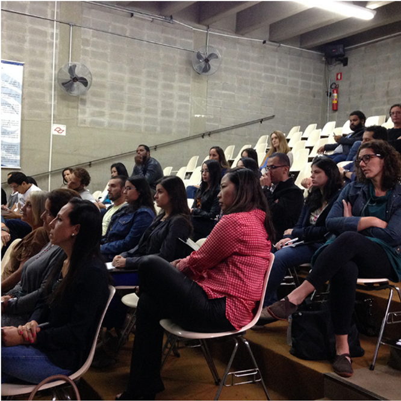
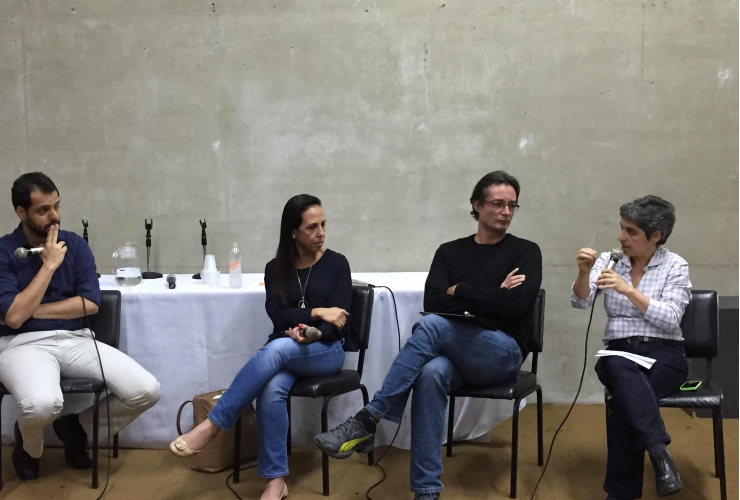
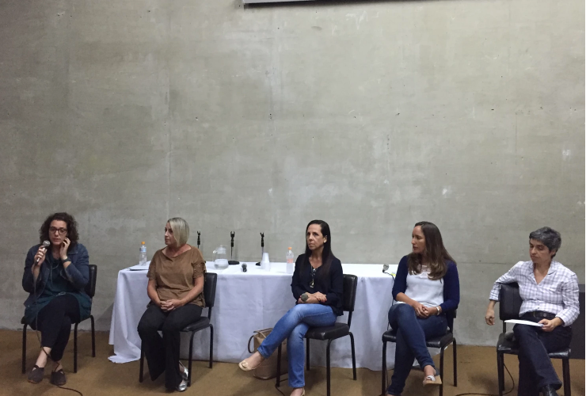
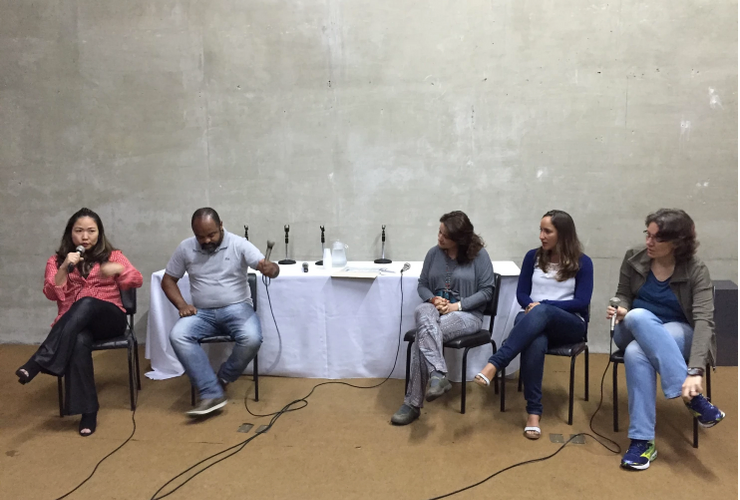
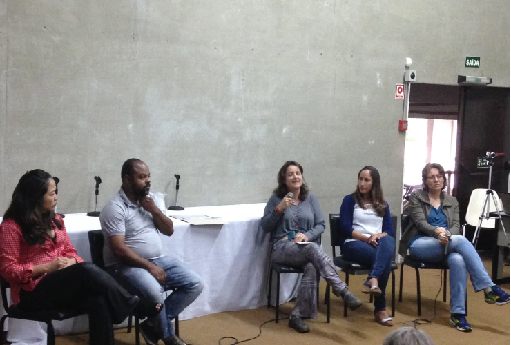
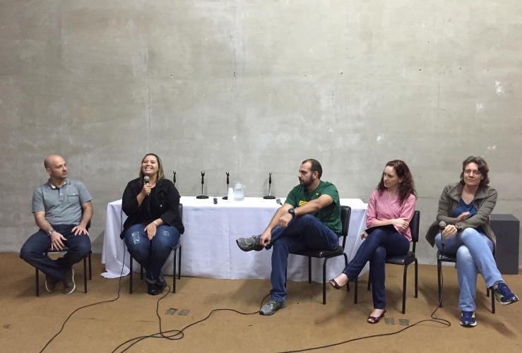
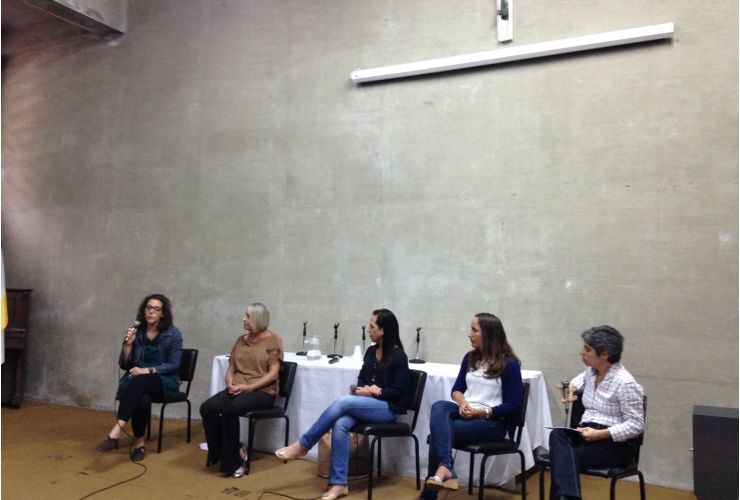
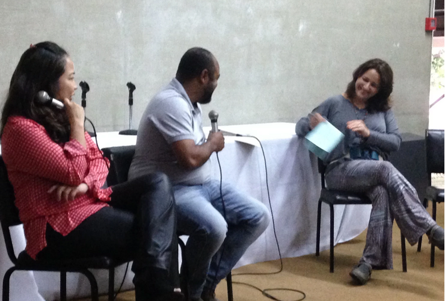
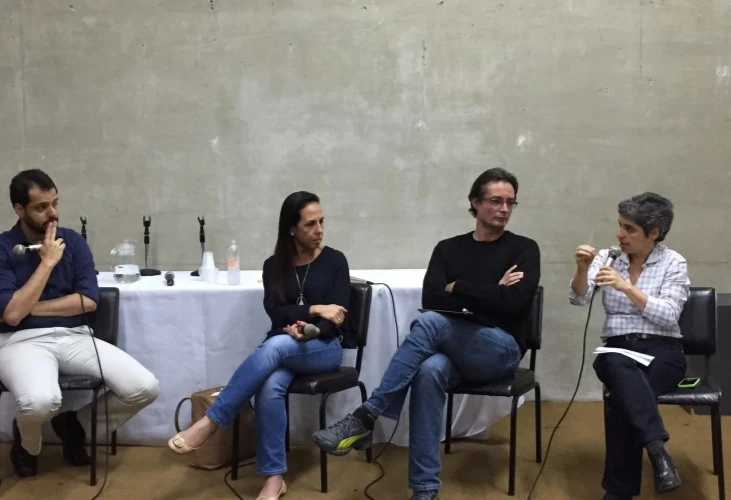
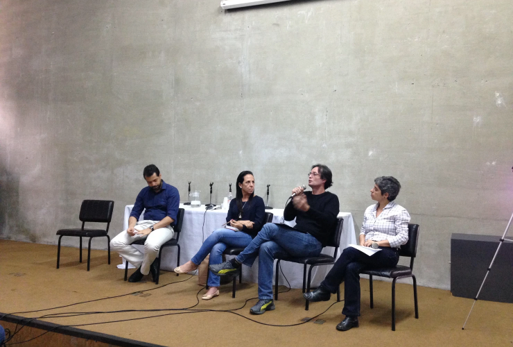

O evento de encerramento da sétima turma de Especialização em Psicologia do Esporte e da Atividade Física, foi marcado pelo encontro de personalidades da área no auditório do Instituto Sedes Sapientae em São Paulo. A Roda de Conversa coordenada pelas professoras Dra. Luciana Ângelo e Ms. Marisa Markunas aconteceu no ultimo dia 7, tinha como tema “As perspectivas da Psicologia do Esporte no Brasil”.

Foram organizadas mesas de discursões para debater quatro tópicos:
– Psicologia do Esporte na Graduação e na Especialização;
– Campos de atuação na Psicologia do Esporte;
– Jogos Olímpicos e Paraolímpicos; e,
– Os planos institucionais e a Psicologia do Esporte.
O evento contou ainda com um ar saudosista, visto que muitos dos participantes já fazem parte da Psicologia do Esporte há algum tempo e de muitos deles já terem passado pelo curso de Especialização em algum momento de suas vidas, como alunos ou como colaboradores. A importância das rodas de conversas vão muito além dos tópicos abordados ou dos encontros e reencontros. Passam pela reflexão sobre as trajetórias e historias vividas desses personagens que ao longo do seu próprio desenvolvimento foram a divulgando os conhecimentos da Psicologia do Esporte no Brasil.









Um dos grandes encontros foi a ultima mesa, mediada pela Dra. Luciana Ângelo, onde estavam lado a lado a Dra. Samia Hallage (COB), o Dr. Eduardo Cillo (Consultoria Interação) e o Psicólogo Rodrigo Acioli (Presidente Eleito da Abrapesp), discutindo os planos institucionais e a Psicologia do Esporte. Este grupo apresenta muito da própria formação em Psicologia do Esporte, pois a Dra. Samia Hallage e o Dr. Eduardo Cillo fizeram parte da coordenação do curso de Especialização em Psicologia do Esporte do Núcleo Paradigma em SP, outra referencia na formação de Especialistas em Psicologia do Esporte no Brasil. Para os alunos do curso e convidados que também participaram do V Congresso Nacional da Abrapesp em Brasília, a roda de conversas realmente foi um encontro pontual quase que cirúrgico, pois complementou e enriqueceu debates e conversas iniciados lá e finalizadas aqui com “Chave de Ouro”.
“As mesas abrangeram diferentes temas e a primeira me fez refletir sobre a minha história na Psicologia do Esporte, fiquei feliz em saber que os integrantes ministravam a disciplina Psicologia do Esporte na graduação de Psicologia, algo que não tive oportunidade”. E complementa: “Os profissionais que participaram atuam em diferentes áreas (futebol, natação, atletismo, games, Confederações brasileiras, etc.). Isto nos possibilitou compreender os nossos diversos campos de atuação e suas peculiaridades, a influência da instituição na atuação profissional, os diferentes contratos de trabalho que podemos firmar com instituições, equipes, clubes e/ou atletas. Além de apresentar modelo de atuação profissional frente à determinadas situações e a importância do trabalho interdisciplinar. Eles abordaram vivências práticas, o que colaborou bastante para compreensão e reflexão da minha atuação profissional.” – Igor Leone aluno do curso,